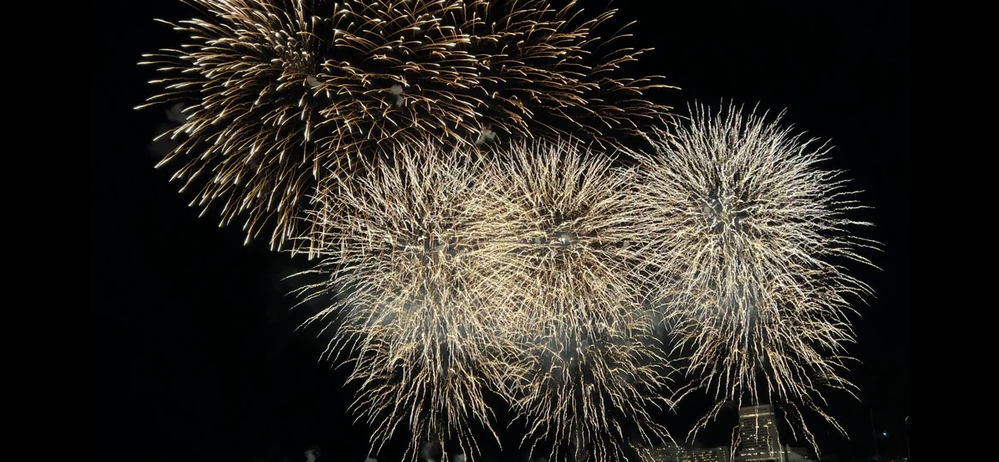
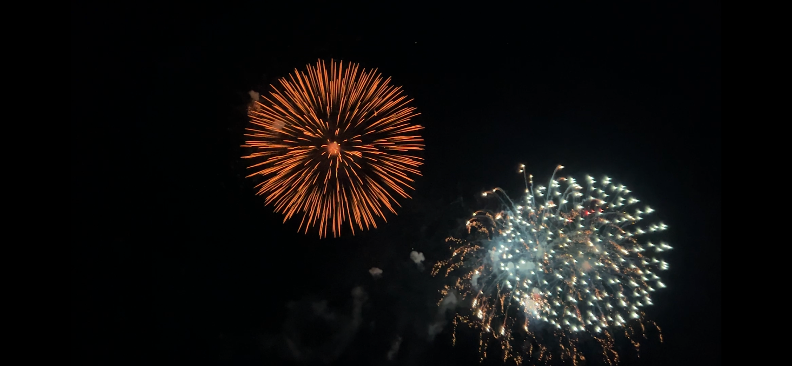
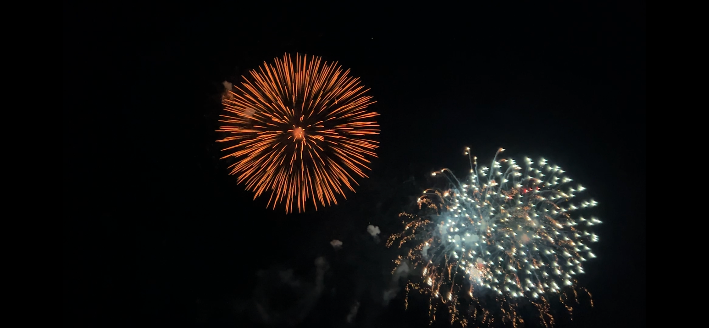

熱海海上花火大会
定期開催の花火大会
熱海の観光地としての意地を感じる



会場：熱海湾（熱海サンビーチ～熱海港））
予算：\0
アクセス：東日本旅客鉄道（JR東日本）伊東線 熱海駅より徒歩15～20分
地図
コメント
年間を通して10回以上開催。
夏季と秋季は月1から週1の頻度で開催されている。
ただし夏季は平日開催が多く、土日開催の日は非常に混雑する。
観覧席等は用意されていないので、砂が気になる方は、シートを持っていくのがおすすめ。
高頻度で開催されているうえに、花火も大きく満足度高い。
熱海エリアで開催されるイベントおいて安心と信頼のおけるクオリティだと言える。
大きな荷物は熱海駅前の熱海第1ビルアタミックスで預けることは可能だが、お店の営業時間に注意。
花火大会の日程に合わせて熱海旅行の計画をたてる価値がある。